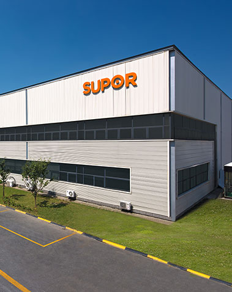

企业简介
2/8

浙江苏泊尔股份有限公司是中国最大、全球第二的炊具研发制造商，中国厨房小家电领先品牌，是中国炊具行业首家上市公司（股票代码002032）。苏泊尔创立于1994年，总部设在中国杭州，在杭州、玉环、绍兴、武汉和越南胡志明市建立了5大研发制造基地，拥有10000多名员工。
苏泊尔是中国炊具行业首家上市公司。苏泊尔拥有明火炊具、厨房小家电、厨卫电器三大事业领域，丰富的产品线，全面满足厨房生活需求。旗下生产的炊具及生活家电产品销往全球41个国家和地区，压力锅、炒锅、煎锅、蒸锅连续多年国内市场占有率稳居第一